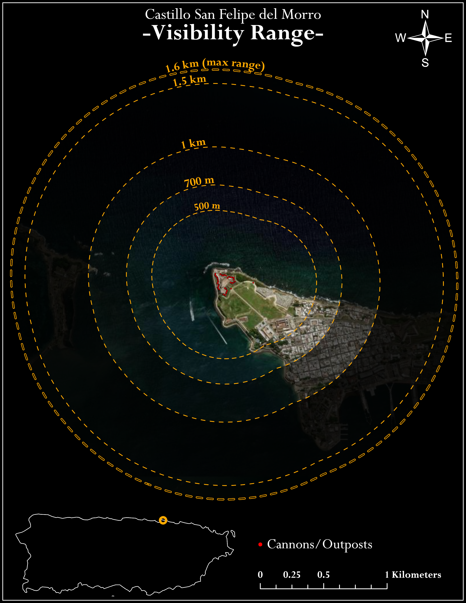

Distance-based visualization of defensive reach from Castillo San Felipe del Morro

This map provides a simplified representation of visibility from Castillo San Felipe del Morro using distance-based buffer zones. Unlike the viewshed analysis, which models terrain-driven line-of-sight, this visualization focuses on how far visibility extends outward from the fort in a more general and intuitive way.
Buffer rings were created around cannon positions to represent increasing distance from the fort. These ranges help show the spatial scale of El Morro’s defensive reach toward the Atlantic Ocean and the entrance to San Juan Bay.
While this visualization doesn't account for terrain obstruction, it's a useful complement to the viewshed analysis by providing clear visual reference for distance and orientation.